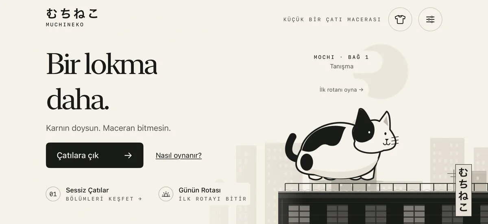
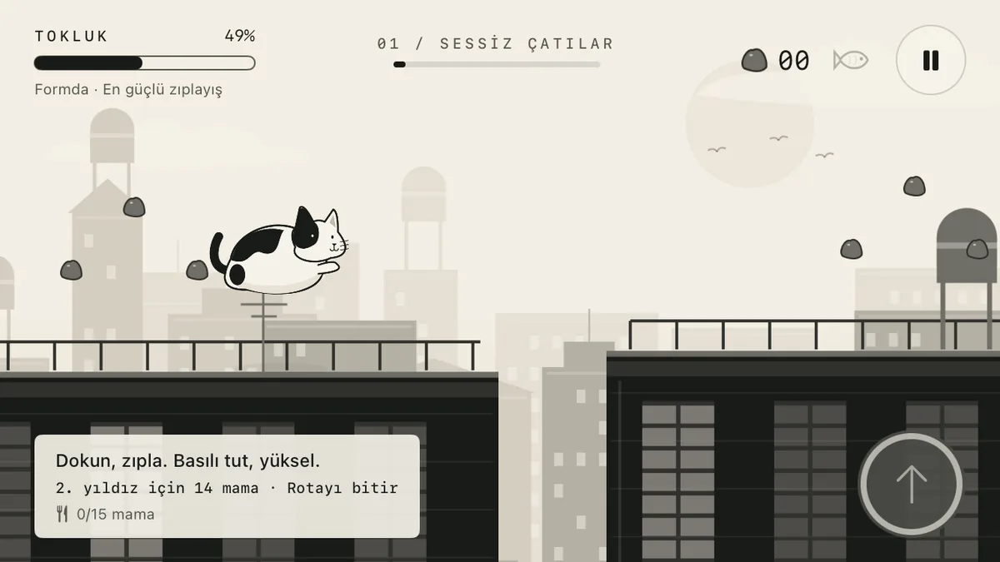
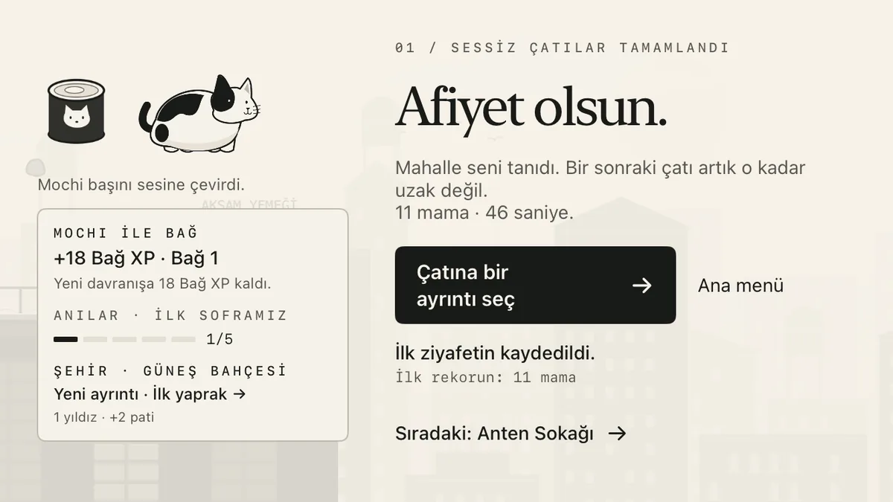
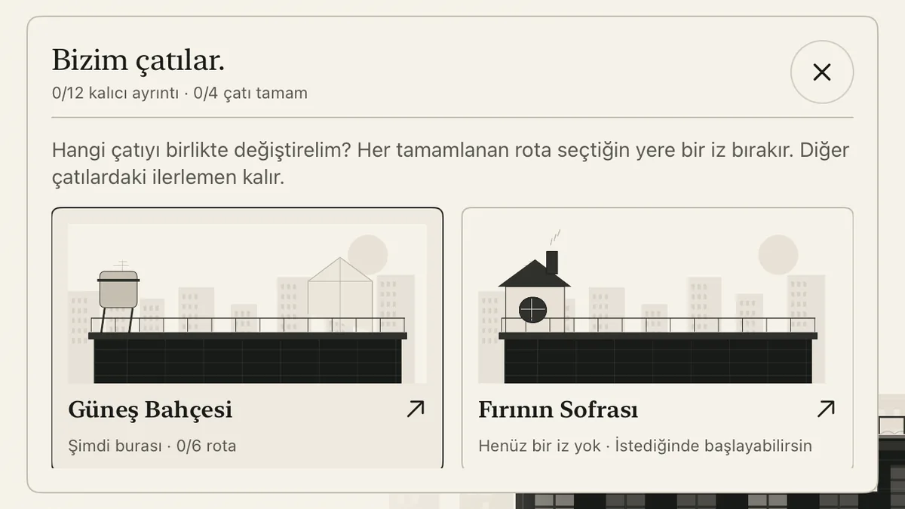

OYUN · iPHONE · YATAY
Muchineko
むちねこ · Küçük bir çatı macerası
Krem kâğıt ve mürekkepten çizilmiş bir şehrin çatılarında kedin kendi koşar; sen yalnızca zıplatırsın. Asıl mesele ne kadar tok olduğun: yediğin mama sıçrayışını değiştirir, rotayı ona göre okursun.
Şu an iç TestFlight'ta. Henüz App Store'da değil; yayımlandığında indirme bağlantısı burada olacak.
01 · NASIL OYNANIR
Dokun, zıpla, tokluğunu ayarla
Dokunarak zıplarsın; basılı tutarsan daha yükseğe çıkarsın, erken bırakırsan sıçrayış kısalır. Yoldaki mama tokluğu artırır, kedi otu azaltır. Tokluk göstergesi hangi yolun açık olduğunu söyler:
Çamaşır iplerine inebilirsin; ipler yalnız hafif kediyi taşır.
En güçlü zıplayış. Uzun boşlukları bu aralıkta geçersin.
Tentelere düşünce sekip göğe yükselirsin.
Düşersen son güvenli çatıdan devam edersin. Her rota bir yol arkadaşıyla geçer: Mochi ya da gri çizgili Sumi. Koşu bitince kedinle selamlaşır, bağınızı büyütür, çatına kalıcı bir ayrıntı eklersin.
02 · SEKİZ MAHALLE
Sessiz Çatılar'dan Fener Rıhtımı'na
- 01Sessiz Çatılar
- 02Anten Sokağı
- 03Son Işık
- 04Çamaşır İpleri
- 05Kiremit Yokuşu
- 06Ay Işığı Pazarı
- 07Fırın Sokağı
- 08Fener Rıhtımı
03 · EKRANLAR
Oyundan kareler




04 · YAPIM NOTLARI
Nasıl yapıldı?
SwiftUI ve SpriteKit ile yazılmış, Türkçe, yatay bir iPhone oyunu. Bütün çizimler krem kâğıt ve mürekkep diliyle, iki renk ağırlıklı yapıldı. Oyun tamamen çevrimdışı oynanıyor; ilerleme önce cihazdaki yerel kayda yazılıyor. Bulut yedeği, kullanım verisi ve hata paylaşımı ayrı ayrı ve isteğe bağlı. Büyük yazı ve Hareketi Azalt ayarlarına uyum ayrıca sınandı.
Geliştirici: Ali Emre Büyükkol.